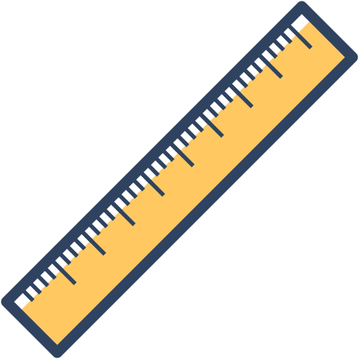

LENGTH Conversion
Length is a measurement, which identifies the distance between two points. It also measures how long an object is, its height and its width.
The two main systems used for measuring length are the imperial and the metric system.
Convert centimeters to inches.
Centimeters
Inches
Convert meters to yards.
Meters
Yards
Convert Kilometers to miles.
Kilometers
Miles